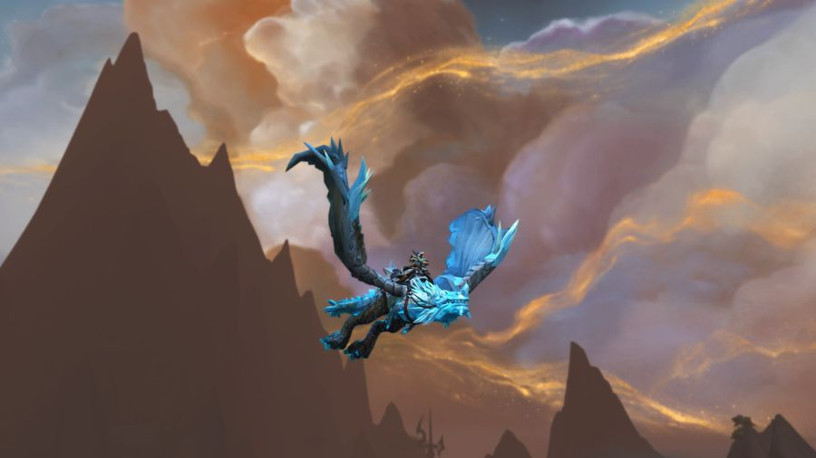

Through Aug 11
18d left
Run each week's featured Timewalking dungeons across the six week event and finish the meta before Aug 11 to claim the Spawn of Vyranoth mount, with the finale returning to Dragonflight Timewalking.
